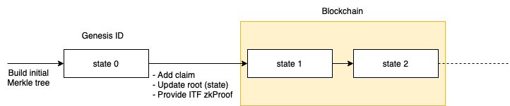

Iden3 Protocol Specifications (Version 0)
These specifications are under development and are being updated regularly. Consider it as a work-in-progress.
Basis
Glossary
- Issuer: An actor who makes a claim.
- Holder: An actor who receives a claim.
- Verifier: An actor who verifies if the content of a claim is issued by a specific identity and held by another specific identity.
- Credential: Data that is needed to prove that a claim is issued by a specific identity and held by another specific identity. This data is composed of a claim and a proof.
Merkle Tree
A Merkle tree (MT) or a hash tree is a cryptographically verifiable data structure where every "leaf" node of the tree contains the cryptographic hash of a data block, and every "non-leaf" node contains the cryptographic hash of its child nodes.
The MTs used in the protocol have a few particularities:
- Binary: Each node can only have two children.
- Sparse and Deterministic: The contained data is indexed, and each data block is placed at the leaf that corresponds to that data block's index, so insert order doesn't influence the final Merkle tree Root. This also means that some nodes are empty.
- ZK-friendly: The used hash function, poseidon, plays well with the zero-knowledge proofs (ZKP) used in different parts of the protocol.
In order to ensure that these particularities are respected and to have a history of all the changes that occurred on different trees (without revealing the actual content stored in the leaves), the root of each MT is indirectly stored on the blockchain. The EVM-based blockchains are chosen for this purpose.
The Merkle tree specification is defined in this document. In future, the MT implementation could be changed.
Zero-knowledge Proof (ZKP)
In cryptography, a zero-knowledge proof is a method by which one party (the prover) can prove to a second party (the verifier) that the prover knows a value x (that fulfills some constraints), without revealing any other information apart from the fact that s/he knows the value x.
The technologies that implement these techniques are evolving rapidly. As of now, the protocol uses zkSNARKs Groth16, but in future, the ZK protocol could be changed. zkSNARK stands for "Zero-knowledge Succinct Non-interactive Argument of Knowledge", and has the following properties:
- Non-interactive: With a single message (credential) from the prover, the verifier can verify the proof. This is good because it allows sending proofs to a smart contract that can verify these proofs immediately.
- Efficient Verification: It is computationally efficient to verify proofs, both in terms of the size and the operations. This is apt for the protocol because verification happens on the blockchain with its inherent costs.
- Heavy Proof Generation: Generating a proof is computationally very expensive and can be time-consuming even with powerful hardware.
- Setup: A pre-existing setup between the prover and the verifier is required for the construction of zkSNARKs. In order to ensure that the verifier cannot cheat, one has to be sure that the keys used for the setup have been destroyed. There are protocols to ensure that, resulting in a "trusted setup".
Read more technical information about zkSNARKs in this article by Vitalik Buterin.
Claims
Definition
A claim is a statement made by one identity about another identity or about itself. Each claim is composed of two parts: the index part and the value part. Claims are stored on the leaves of an MT. The index is hashed and is used to determine the leaf position where the value of the claim will be stored. A special transition validation function can be used to restrict how leaves are stored on the Merkle tree, i.e. make the MT append-only, (leaves can only be added and cannot be updated or deleted).
Properties
- It is impossible to generate proof of a statement on behalf of an identity without its consent.
- Claims can be revoked.
- Claims can be updated by creating new versions. When a claim is revoked, no further versions can be made. Claims can be set to be updatable or not with a flag (See Claim Structure).
graph LR
revoked(Revoked claim)
no-claim-->v0
v0-->v1
v1-.->vN
vN-->vN1
vN1-->revoked
no-claim(No claim)
v0(Claim v0)
v1(Claim v1)
vN(Claim vN)
vN1(Claim vN+1)- Claims can be verified. This means that it is possible to demonstrate cryptographically that a given claim is:
- Issued by a specific identity.
- Not revoked.
- Is of the last version of that claim if it is updatable.
- There are two types of claims regarding destination:
- Claims about identity's own properties. Example: Operational Key, Ethereum Address, etc.
- Claims about another identity's properties:
- (Another) Identity has a Property: Directional relation between an identity and a property (See Claim Structure: identity stored in hIndex, i_1).
- Property is Owned by (Another) Identity: Directional relation between a property and an identity (See Claim Structure: identity stored in hValue, v_1).
Note
Some of these properties are only guaranteed by a transition validation function (explained above in this document).
Structure
h_i = H(i_0, i_1, i_2, i_3)
h_v = H(v_0, v_1, v_2, v_3)
h_t = H(h_i, h_v)
graph TD
Hi-->i0
Hi-->i1
Hi-->i2
Hi-->i3
Hv-->v0
Hv-->v1
Hv-->v2
Hv-->v3
Ht-->Hi
Ht-->HvIndex:
i_0: [ 128 bits ] claim schema
[ 32 bits ] option flags
[3] Subject:
000: A.1 Self
001: invalid
010: A.2.i OtherIden Index
011: A.2.v OtherIden Value
100: B.i Object Index
101: B.v Object Value
[1] Expiration: bool
[1] Updatable: bool
[3] Merklized: data is merklized root is stored in the:
000: none
001: C.i Root Index (root located in i_2)
010: C.v Root Value (root located in v_2)
[24] 0
[ 32 bits ] version (optional?)
[ 61 bits ] 0 - reserved for future use
i_1: [ 248 bits] identity (case b) (optional)
[ 5 bits ] 0
i_2: [ 253 bits] 0
i_3: [ 253 bits] 0
Value:
v_0: [ 64 bits ] revocation nonce
[ 64 bits ] expiration date (optional)
[ 125 bits] 0 - reserved
v_1: [ 248 bits] identity (case c) (optional)
[ 5 bits ] 0
v_2: [ 253 bits] 0
v_3: [ 253 bits] 0
Reliability of a Claim Content
The correctness of what is said in a claim is not verifiable by a protocol since every identity is free to claim whatever it wants. Since it is possible to know which identity issued which claim, the trust/reputation that the issuer has can affect its credibility.
However, the protocol can guarantee exclusivity: there cannot be two claims with the same index. So it is impossible that an identity claims that a property (index part of the claim) is linked to two different identities (value part of the claim) at the same time.
Keys
Keys are cryptographic elements that can be used to sign data. In a protocol, keys are used to authenticate certain interactions.
These keys require the authorization of the identity (who owns these keys). This is done by adding a claim with a specific schema, linking the key(s) with the identity.
This way, each time that a key is used for signing, the identity can (and must) prove the ownership of that key and the fact that the key is not revoked.
Types of Keys
- Baby Jubjub: Used for authentication. This type of key is designed to be efficient while working with zkSNARKs.
The
Baby Jubjub Elliptic Curvespecification is defined in this document.
Identity
Definition
An identity is characterized by the claims that the identity has issued, and the claims that the identity has received from other identities. In other words, an identity is built by what the identity has said, and what others have said about the identity.
Each claim that an identity issues can be cryptographically proved and verified, ensuring that the claim existed under identity at a certain timestamp.
graph TD
Root-->A
Root-->B
A-->C
A-->D
B-->E
B-->F
C-->G
C-->H
D-->I
D-->J
E-->K
E-->L
F-->M
F-->N
G["claim"]
H["claim"]
I["claim"]
J["claim"]
K["claim"]
L["claim"]
M["claim"]
N["claim"]To accomplish this (and other properties covered in this document), identities are built by Merkle trees, where the claims are placed as the leaves, and the Root is published (indirectly through the identity state) on the blockchain. With this construction, the identities can issue, update, and revoke claims.
The protocol construction is designed to enable zero-knowledge features. It means that the identities have the ability to prove the ownership of the properties of the claims in issued and received claims and verify that a particular claim is not revoked.
Genesis ID
Description
Each identity has a unique identifier that is determined by the initial identity state (hash of its Merkle Tree Roots). This identifier is called Genesis ID, under which the initial claims are placed (those that are contained in the initial state of the identity).
For the initial implementation of the protocol, the Genesis Claims Tree will contain at least a claim of authorization of the Operational Key that allows operation in the name of identity.
While an identity does not add, update or revoke claims after the Genesis State, its identity state does not need to be published on the blockchain, and the Genesis Claims can be verified directly against the Genesis ID. This is because the Genesis ID is built by the Merkle Root that holds those claims.
Note
The Genesis ID is calculated with the Identity State as a hash of the Genesis Claims Tree Root, an empty Revocation Tree Root and an empty Roots Tree Root.
Identifier Format
An Identifier is determined by its identity type and the Genesis Identity State (also called the Genesis ID). This is built by creating a Merkle Tree that holds the initial state claims, calculating its root, and hashing it together with an empty Revocation Tree Root & an empty Roots Tree Root. Then we take the first 27 bytes of this result and add to it 2 bytes at the beginning (to specify the identity type), and 2 bytes at the end (for checksum).Thus, in total, an identifier is a byte array of 31 bytes, encoded in base58.
An identity type specifies the specifications that an identity follows (such as the hash function used by the identity). In this way, when the hash function changes, the identifiers of the identities will also change, allowing us to identify the type of identity.
Identifier Structure:
ID(genesis): Base58 [type|genesis_state|checksum]type: 2 bytes specifying the typegenesis_state: First 27 bytes from the identity state (using the Genesis Claim Merkle tree)checksum: Addition (with overflow) of all the ID bytes Little Endian 16 bits ( [type|genesis_state] )
Identity State
The identity states are published on the blockchain under the identifier, anchoring the state of the identity with the timestamp when it is published. In this way, the claims of the identity can be proved against the anchored identity state at a certain timestamp. To transition from one state to the other, identities follow the transition functions.
The identity states can be published on the blockchain in one of the two ways: directly performing the transaction to publish the root or indirectly using a Relay.
The Genesis State is the initial state of any identity, and does not need to be published on the blockchain, as the claims under it can be verified against the identifier itself (that contains that identity state).

Identity State Transition Function
The ITF (Identity State Transition Function) is verified each time a state is updated. This ensures that the identity follows the protocol while updating.
An Identity Merkle tree is a sparse binary tree that allows only the addition of the leaves (no edition or deletion). Adding new claims, updating them through versions and revoking need to be done according to the ITF. To ensure this, we use zero-knowledge proofs in a way that when an identity is publishing a new state to the smart contract, it also sends a zero-knowledge proof (), proving that the is satisfied following the ITF. In this way, all the identity states published on the blockchain are validated to be following the protocol.
Note
In the initial version of the implementation, there will be no checks to verify that the trees are append-only in the smart contract. This is due to the fact that complex computations are required to generate the ZK proofs for multiple claim additions, (a requirement for scalability).
The full circuit can be found here: https://github.com/iden3/circuits/blob/master/circuits/stateTransition.circom
Identity Profiles (NEW)
Identity Profiles allow users to hide their Genesis ID during interactions. Instead, users will be identified by their Identity Profile.
An Identity Profile is generated from the GenesisID and hashing it with a (random) nonce.
Identity Profile has the same structure as the Genesis ID. It is a byte array of 31 bytes, encoded in base58.
[ IDtype (2 bytes) | profile_state (27 bytes) | checksum (2 bytes) ]
IDtype: inherited type fromGenesis IDprofile_state: First 27 bytes from the poseidonHash(Genesis ID,profile_nonce), whereprofile_nonceis any random numberchecksumAddition (with overflow) of all the ID bytes Little Endian 16 bits ([typeID|profile_state])
Identity Profiles are irreversible and indistinguishable:
- Irreversible, thanks to the properties of the underlying hash function, meaning that it is impossible to retrieve the
Genesis IDfrom anIdentity Profile, unless you know the nonce. - indistinguishable, the data format of Identity Profiles is the same as Genesis IDs. It follows that an external party cannot tell if an identity is using its Genesis ID or one of its many Identity Profiles.
An Identity can receive claims to a specific Identity Profile. An Identity Profile keeps all the properties of Genesis IDs while adding:
- Anti-track
Since users are no longer consistently identified with the same identifier in their interactions across different platforms, it becomes harder to track the action of a single user. Even if platforms collude. Even more, the user can interact with the same platform using different Identity Profiles, making it impossible to track the user across different interactions inside the same platform.
- Faculty to decide which profile to show
Users can decide which profiles to show as it is only based on the nonce. An Identity can create an Identity Profile and reuse it across interaction with different actors, for example in the case of a Profile with all their business information just by reusing the same nonce. For interactions that require the maximum level of privacy, an Identity can create a single-use Identity Profile by choosing a random nonce and never reusing it again.
- Reusability of claims across different profiles
Users can get claims issued to an Identity Profile (or to their Genesis ID) and generate proof, based on these claims, from a different Identity Profile. The Verifier will be only able to see a valid proof coming from the Identity Profile that the user decided to use. No connection between the two identities is leaked.
Despite being able to create multiples Identity Profiles, the control of the Identity is still still managed by the underlying Private Key.
GIST (NEW)
GIST, namely Global Identities State Tree, is a Sparse Merkle Tree that contains the state of all the identities using Iden3 protocol. In particular, each leaf is indexed by the hash of its Genesis ID (key of the leaf) and contains the most recent state of that Identity (value of the leaf).
The choice of using the hash of the Genesis ID as key of the leaf (instead of the Genesis ID itself) is to avoid that all the leaf accumulates in the same branch of the tree, since the Genesis ID has a fixed prefix. This would make the tree very unbalanced and inefficient. Instead, by using the hash of the Genesis ID, we randomize the position of the leaf in the tree, making it more balanced.
The GIST is stored inside the State Contract. Every time a user executes a State Transition function, the new state of an identity is added to the GIST stored on-chain
gistTree.add(H(genesisID), state)
This design allows users to prove ownership of an Identity by proving that this is included in the GIST without revealing which one is their Genesis ID!

Identity Ownership
We prove the identity ownership inside a zkSNARK proof. This means that the user can generate a zk-proof that s/he knows a private key corresponding to the operational key for authorization claim added to the Claims Tree, without revealing the claim and its position. This is coded inside a circom circuit, which can be used in other circuits (such as the id state update circuit).
The full circuit can be found here: https://github.com/iden3/circuits/blob/master/circuits/lib/idOwnershipBySignature.circom
Identity Key Rotation
An identity can self-issue and revoke many private keys and the corresponding claims of the type operational key authorization, enabling key rotation. To support verification of such claims, an identity state should be publicly available on the blockchain. An identity can publish the state to the blockchain directly or via the Relay.
Any private key for which a corresponding claim exists in the Identity Claims Tree and does not exist in the Identity Revocation Tree, can be used to create a zero-knowledge proof for valid credentials. Such proof should pass verification by a verifier as it is able to check the latest identity state in the blockchain.
In the same way, any valid and non-revoked identity private key can be used to create a valid ZK proof for the Identity State Transition Function.
Note
An identity may lose some privacy while disclosing its state to a verifier, which can track all the proofs of the same identity in that manner. However, this issue can be mitigated if the identity state is published to the blockchain via a Relay. In such a case, only the Relay state needs to be disclosed to a verifier.
Identity Revocation
When an identity revokes all the claims of the type operational key authorization, it is considered revoked as this identity can no longer create proofs.
Interaction between Identity and Claims
Identity State Update
The Identity State Update is the procedure used to update information about what this identity has claimed. This involves three different actions:
- Add a claim.
- Update a claim (by incrementing the version and changing the claim value part).
- Revoke a claim.
Definitions
IdState: Identity StateClT: Claims TreeClR: Claims Tree Root
ReT: Revocation TreeReR: Revocation Tree Root
RoT: Roots TreeRoR: Roots Tree Root
The IdState (Identity State) is calculated by concatenating the roots of the three user trees:
IdState:H(ClR || ReR || RoR)whereHis the Hash function defined by the Identity Type (for example, Poseidon).
All trees are SMT (sparse Merkle trees) and use the hash function defined by the Identity Type.
- Leaves in
ClT(Claims Tree) are claims ((4 + 4) * 253 bits = 253 bytes)
See Claim Structure
- Leaves in
ReT(Revocation Tree) are Revocation Nonce + Version (64 bits + 32 bits = 12 bytes)Revocation Tree Leaf: leaf: [ 64 bits ] revocation nonce [ 32 bits ] version [157 bits ] 0 - Leaves in
RoT(Roots Tree) are tree roots (from the Claims Tree) (253 bits = 32 bytes)Roots Tree Leaf: leaf: [253 bits ] tree root

Identity State Diagram for Direct Identity
As seen in the diagram, only the IdState is stored on the blockchain. In order to save the stored bytes on the blockchain, it is desirable that only one "hash" representing the current state of the Identity is stored on the smart contract. This one "hash" is the IdState (Identity State), which is linked to a timestamp and a block on the blockchain.
All the public data must be made available for any holder so that
they can build fresh Merkle tree proofs of both the ReT and RoT. This allows the holder to:
- Prove recent non-revocation / "current" version without interaction with the issuer.
- Hide a particular
ClRfrom all the otherClRs to avoid an issuer from discovering a claim hidden behind a ZK proof. For this purpose,ClRis added toRoR.
The place and the method to access the publicly available data are specified in the Identities State smart contract. Two possible initial options are:
- IPFS, by adding a link to an IPNS address (example:
ipfs://ipns/QmSrPmbaUKA3ZodhzPWZnpFgcPMFWF4QsxXbkWfEptTBJd), which contains a standardized structure of the data. - HTTPS, by adding a link to an HTTPS endpoint (example:
https://kyc.iden3.io/api/v1/public-state/aabbccdd), which offers the data following a standardized API.
Publish Claims
The first step in publishing a claim involves adding a new leaf to the ClT, which updates the identity ClR. Claims can be optionally published in batches, adding more than one leaf to the ClT in a single transaction. After the ClT has been updated, the identity must follow an Identity State Update so that anyone is able to verify the newly added claims. This involves adding the new ClR to the RoT, which in turn will update the RoR. After that, the new IdState is calculated and through a transaction it is updated in the Identities State Smart Contract (from now on, referred to as "the smart contract") on the blockchain. Once the updated IdState is in the smart contract, anyone can verify the validity of the newly added claims.
The procedure to update the IdState in the smart contract can be achieved with the following criteria:
- Bad scalability (no batch), good privacy, and correctness: The identity uploads the new
IdStateto the smart contract with proof of a correct transition from the oldIdStateto the new one. Only one claim is added to theClTin the transition. - Good scalability (batch), good privacy, and correctness: Same as before, but many claims are added (batch) in the transition (with a single proof for all newly added claims)
- Good scalability (batch), good privacy but no correctness: The identity uploads the new
IdStateto the smart contract, without proving correctness on the transition.
The criteria for correctness are as follows:
- Revocation of a claim cannot be reverted.
- Updatable claims are only updated with increasing versions, and only one version is valid at a time.
To have or to not have the guarantee of the correctness is specified in the Identity Type so that any verifier knows about the guarantees provided by the protocol for the issuer claims.
Note
Good scalability refers to the verification process and the costs related to the smart contract. Batching with zkSNARKs can have a high computation load on the prover.
Revocation Tree
Sometimes, it is desirable for an identity to invalidate a statement made through a claim. For regular claims, this involves revoking (a process that is ideally irreversible) and allows any verifier to be aware that an already published claim is made invalid by the issuer's identity. Similarly, for updatable claims, there must be a mechanism to invalidate old versions when a new one is published. Since confirming the current validity of a claim is a parallel process to confirming that a claim was published at some point, the "current validation" process can be separated.
Separating these two processes allows a design in which the ClT (Claim Tree) remains private, but the revocation/version information is public, allowing a holder to generate a fresh proof of the "current validity" without requesting access to the private ClT.
To achieve this, every Identity has a ClT (Claim Tree) and a separate ReT(Revocation Tree). While the Claim Tree would be private and only the root public, the revocation tree would be entirely public. The roots of both the trees (ClT and ReT) are linked via the IdState (Identity State) which is published in the smart contract. The Revocation Tree could be published in IPFS or other public storage systems.
Proving that a claim is valid (and thus not revoked/updated) consists of two proofs:
- Prove that the claim was issued at some time t (this proof is generated once by the issuer and uses a
IdState-ClRat time t stored in the smart contract). - Prove that the claim has not been revoked/updated recently (this proof is generated by the holder with a recent
ReR(Revocation Tree Root) by querying the publicReT(Revocation Tree), and verified against a recentIdState).
Revoke Claims
To prevent revealing anything about the content of the claim in the ReT, the claim contains a revocation nonce in the value part, which is added as a leaf in the ReT to revocate the claim.
To prevent reversing revocation of a claim, the ReT needs to follow some transition rules like ClT, enforced by a ZK proof (for space and verification efficiency).
Apart from the revoking procedure, there is a method to define the validity of a claim based on expiration, by explicitly setting an expiration date in the claim (See Claim Structure). Revoking and Expiration are compatible methods to invalidate claims.
Update Claims
To update a claim, a new claim is added to the ClT with an increased version value in the index position of the claim (notice that the previous version of the claim is not touched). Then, a leaf is added to the ReT containing the revocation nonce and the highest invalid version (that is, all the claims with that nonce and version equal or lower to the one in the leaf are invalid). This means that when a claim is updated, the same revocation nonce is used in the claim.
To prevent downgrading the version of a claim, and forcing to have only one valid updatable claim at a time, the ReT needs to follow the transition rules (like the ClT does) enforced by a ZK proof (for space and verification efficiency).
Updating and revoking are compatible methods to invalidate claims: an updatable claim can be revoked, which means no future (or past) updates would be valid.
In case a claim needs to be revoked completely, without the possibility to update, the highest version and the revocation nonce should be added to the ReT.
Prove Claims (Credentials)
Nomenclature - MTP: Merkle Tree Proof. The list of siblings in a path from a leaf to the root.
Prove that a Claim was Issued at Time t
- Requires proving a link between the claim and
IdState_t(Identity State at time t) published in the smart contract. This proof requires:- Claim
- t
- MTP Claim ->
ClR_t RoR_t(Roots Tree at time t)ReR_t(Revocation Tree Root at time t)IdState_t
where t is any time.
Prove that the Claim is Currently Valid
Prove that the Claim Hasn't Been Revoked Recently
- Requires proving the inexistence of a link between the claim revocation nonce and a recent
IdState_t(tmust be recent according to the verifier requirements [1]) published in the smart contract. This proof requires:- Claim (Nonce)
- t (Recent Time)
- MTP !Nonce ->
ReR_t ClR_tRoR_tIdState_t
[1] The verifier needs to decide a time span to define how recent the
IdState_t used in the proof needs to be. Using the current IdStateinstead of recent could lead to data races, so it is better to select an IdState that is no more than X minutes old.
Proof of Last Version
This is very similar to proving that a claim has not been recently revoked except that in this case, not only the nonce in the claim is checked, but also the version.
- Requires proving the inexistence of a link between the claim revocation nonce
version and a recent
IdState_t(tmust be recent according to the verifier requirements [1]) published in the smart contract. This proof requires:- Claim (Nonce, Version)
- t
- MTP !(Nonce, Version) ->
ReR_t ClR_tRoR_tIdState_t
Where t is a recent time.
Proof of Non-Expiration
A claim can be made expirable by setting an expiration flag in the options and specifying an expiration date in the Unix timestamp format in the corresponding claim value part (see Claim Format).
Zero-knowledge Proof of Valid Credentials
A zero-knowledge proof allows hiding some information about a claim while proving that it was issued by a particular identity and that it is currently valid. The same checks mentioned in the previous sections are performed:
- Prove that a claim was issued at least at time t.
- Prove that the claim is currently valid.
In the proof that shows "that a claim was issued at time at least t", there is an additional part that is added to hide a particular IdState_t1 that is used (in order to hide the claim from the issuer). The proof then requires:
- Claim
- t
- MTP Claim -> `ClR_t1`
- `RoR_t1` (Roots Tree at time t1)
- `ReR_t1` (Revocation Tree Root at time t1)
- `IdState_t1`
- MTP `ClR_t1` ->`RoR_t2`
- `ClR_t2` (Claims Tree Root at time t2)
- `ReR_t2` (Revocation Tree Root at time t2)
- `IdState_t2`
Where t1 is any time and t2 is the recent time.
The full circuit can be found at: https://github.com/iden3/circuits/tree/master/circuits/lib